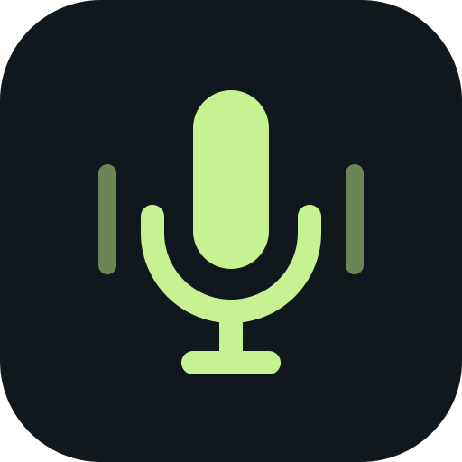

Find your level
Adjust input gain, mute the microphone, and switch browser noise reduction on or off.

MicbridgeFree, open-source preview
Use your phone as a PC microphone over Wi-Fi. Open Safari on your iPhone, connect to Micbridge, and send your voice to a Windows meeting or recording app. No phone app to install.
Windows, macOS, and Linux.
On your phone, just a browser.
Connection illustration. No microphone access needed here.
No phone app to install
No account required
Audio stays local
Use the microphone you already have. Listen on your desktop, save a recording, or send your voice to another app through a virtual audio device.
Adjust input gain, mute the microphone, and switch browser noise reduction on or off.
Monitor the received audio with headphones. Choose a desktop output device for your audio route.
Record a WAV file on your desktop when you want to. Your recordings stay on your computer.
Both devices need to be on the same reachable local network. Your phone remembers the pairing, so you can save its link for next time.
Install Micbridge, or run the portable version. Leave it running while you use your microphone.
Follow the desktop’s local certificate setup, open its phone link, and enter the six-digit pairing code.
Allow microphone access. Enable desktop output to listen, or choose an independent virtual audio device for other apps.
On iPhone, install and trust the local certificate once. Add the phone link to your home screen, and keep the screen awake while streaming.
Read the setup guideFree to use, modify, and share under MIT. Preview builds are unsigned; your operating system may display a warning.
Find the current preview on GitHub Releases.
x64 · Setup wizard or portable app
Drag the app from the DMG into Applications
x64 · Install the .deb, or run the AppImage
Windows installation and virtual microphone output have been tested with iPhone/Safari. Linux and macOS builds pass CI; audio routing on real hardware still needs validation. Android capture also needs device testing. Release notes and checksums
No separate mobile app. Micbridge serves the microphone page from your desktop. Open that local link in your phone’s browser, or add it to your home screen.
Yes. The Windows installer includes optional signed VB-CABLE setup. Click “Enable Micbridge microphone”, then select “Micbridge Microphone (VB-Audio Virtual Cable)” in your meeting or recording app. Existing cables may retain the name “CABLE Output”. macOS requires a virtual audio device; Linux offers a PulseAudio/PipeWire-compatible route. These two desktop routes still need hardware validation. No other microphone software installation is required.
Phone browsers require trusted HTTPS to access the microphone. The desktop creates a local certificate, and its setup page walks you through trusting it. On iPhone, installing the profile and enabling full trust are separate steps. See the setup guide.
Keep your phone’s screen awake and the microphone page visible. Safari can suspend audio when the phone locks or the web app is backgrounded. Reliable locked-screen capture would require a native mobile companion.
Between your phone and desktop on the local network. Micbridge has no account system, telemetry, or cloud audio upload. WAV files are saved on your desktop only when you choose to record.
Yes. Micbridge is MIT licensed, including commercial use. Preserve the copyright and license notice when distributing it. Third-party dependencies retain their own licenses. The bundled VB-CABLE driver is separately licensed donationware; professional or organizational use may require a paid VB-Audio license. The bundled VB-CABLE driver is separately licensed donationware; professional or organizational use may require a paid VB-Audio license.